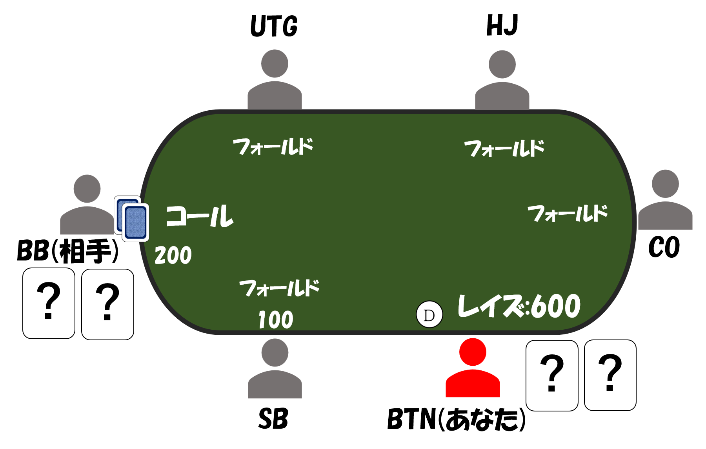
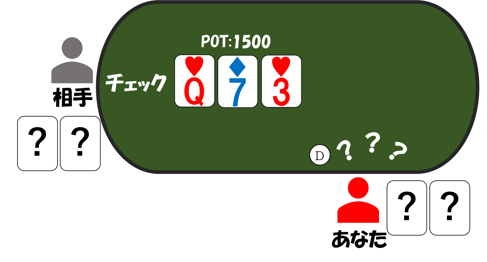

ベットのバランシング
プリフロップであなたはBTNからとあるハンドでレイズ600で参加し、BBにコールされました。状況は以下の通りです。
プリフロップ


フロップ

フロップで相手はチェックしてきました。
ここであなたはどのようなハンドでCBを行うべきでしょうか？
バリューベットとしては、AAやKKのようなオーバーペアやAQやKQのようなトップヒット、さらには33のようなセットは十分に強く、バリューベットができそうです。
一方で、ブラフベットはどうでしょうか？
4や6が引ければストレートが完成する65や54、また❤が引ければフラッシュが完成する9❤8❤等はブラフベットができそうです。
・
バリューハンド
セット(QQ、77、33)、ツーペア(Q7sなど)、AA、KK、Qのワンペアなど
・
ブラフハンド
ストレートドロー(65s、64s、54sなど)、❤のフラッシュドロー